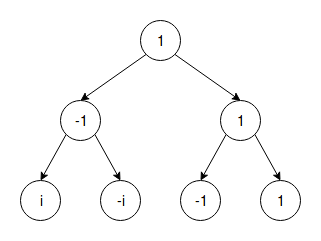

Быстрое преобразование Фурье
Дискретное преобразование Фурье -- есть некий сигнал, преобразование Фурье раскладывает этот сигнала на гармоники, которые в нем есть (каждой присутствующей частоте сопоставляется значение амплитуды).
Быстрое преобразование Фурье -- это алгоритм для вычисления ДПФ.
Пусть у нас есть два полинома: $A(x) = a_0 + a_1x + ... + a_{n-1}x^{n-1}$ $B(x) = b_0 + b_1x + ... + b_{n-1}x^{n-1}$
Хотим вычислить $C(x) = A(x)\cdot B(x)$. У данного полинома длина будет $2n-1\approx 2n$.
Наивный алгоритм работает за $O(n^2)$
Пусть $x_0, ..., x_{n-1}$-- это произвольные числа. Тогда $A(x)$ однозначно определяется числами $A(x_0),...,A(x_{n-1})$. Аналогично $B(x)$ определяется $B(x_0),...,B(x_{n-1})$.
Рассмотрим $C(x)$: для всех $0\leq i \leq 2n - 1:\ \ C(x_i) = A(x_i)\cdot B(x_i)$, и $C(x)$ ими полностью определяется. В таком представлении $C(x)$ можно вычислить за $O(n)$, просто перемножив все $A(x_i)$ и $B(x_i)$. Проблема: нам полиномы даны в представлении коэффициентов (1), а быстро считаем мы в представлении значений (2).
- в (1) умножение за $O(n^2)$
- в (2) умножение за $O(n)$
- $(1) \rightarrow (2)$, "вычисление", вычисляется за $O(n^2)$ (вычисление каждого значения полинома -- $O(n)$)
- $(2) \rightarrow (1)$, "интерполяция", вычисляется за $O(n^2)$ с помощью штуки по имени интерполяционный полином Лагранжа: $A(x) = \sum\limits_{i=0}^{2n-1}\frac{(x_0-x)(x_1-x)...(x_{i-1}-x)(x_{i+1}-x)...(x_{2n-1}-x)}{(x_0-x_i)(x_1-x_i)...(x_{i-1}-x_i)(x_{i+1}-x_i)...(x_{2n-1}-x_i)}A(x_i)$
Вычисление
Рассмотрим еще раз $A(x) = a_0 + a_1x + ... + a_{n-1}x^{n-1}$, и при этом $n$ -- степень двойки. Разобьем $A(x)$ на два полинома с четными и нечетными слагаемыми: $A(x) = (a_0+a_2x^2+a_4x^4+...) + (a_1x+a_3x^3+...) = A_0(x^2) + x\cdot A_1(x^2)$.
При этом мы считаем, что оба представления полинома -- это массивы (либо коэффициентов, либо значений в точках $x_i$).
- $\ \ \ A(x_0) = A_0(x_0^2) + x_0\cdot A_1(x_0^2)$
- $A(-x_0) = A_0(x_0^2) - x_0\cdot A_1(x_0^2)$
Т.о. для того, чтобы вычислить $A(x)$ в двух точках ($x_0$ и $-x_0$) нам достаточно вычислить всего два значения полиномов в два раза меньшей длины ($A_0(x_0^2)$ и $A_1(x_0^2)$). Это дает нам крутой выигрыш, при условии, что набор наших точек $x_0,...x_{n-1}$ разбивается на пары вида $(-x_i, x_i)$.
И отсюда вытекает сложность алгоритма $T(n) = 2T(\frac n2) + O(n) = O(n\log n)$.
Есть проблема: при вызове подсчета $A_0(x_i^2)$ мы в него передаем только положительные точки (квадрат же), из-за чего фишка алгорима не работает. Решение: перейдем в комплексную плоскость.
Посмотрим на дерево аргументов: 
В самом низу дерева нам потребуются корни из единицы $n$-ой степени ($w_i$). Эти корни лежат на единичной комплексной окружности и делят ее на $n$ равных частей. Свойства:
- $w_i = -w_{i+\frac n2}$
- $w_i^2 = w_{2i}$
-
пусть $w$ -- корень степени $n$, $u$ -- корень степени $\frac n2$. Тогда:
- $w_i = w^i$
- $w_i^2 = w_{i+\frac n2}^2 = u_i$ -- происходит то самое склеивание аргументов, которое нам нужно.
Итоговая идея: мы из аргументов $a_0,...,a_{n-1}$ можем перейти к значениям $A(w_0),...,A(w_{n-1})$ за $O(n\log n)$.
Алгоритм:
def FFT(a, w):
# a -- массив параметров a_0, ... , a_n-1
# w -- образующий корень из -1 степени n
if w == 1:
# n = 1
return sum(a) # = A(1)
n = len(a)
a_even = [a[i] for i in range(0, n, 2)]
a_odd = [a[i] for i in range(1, n, 2)]
a_0 = FFT(a_even, w * w)
a_1 = FFT(a_odd, w * w)
res = [0 for i in range(n)]
for i in range(n // 2):
res[i] = a_0[i] + (w ** i) * a_1[i]
res[i + n // 2] = a_0[i] - (w ** i) * a_1[i]
return res
Интерполяция
| A(1) | | a_0 |
| A(w_1) | | a_1 |
| A(w_2) | = M(w) * | a_2 |
| ... | | ... |
| A(w_n-1)| | a_n-1 |
Где $M(w)$ -- матрица Вандермонда. Про матрицу известно, что если все числа в строке различны, то она обратима.
Утверждение: $M(w)\cdot M(w^{-1}) = n\cdot I$, где $I$ -- единичная матрица. Доказательство: $M(w)\cdot M(w^{-1})[i, j] = \sum\limits_{k=0}^{n-1} w_i^k\cdot w_k^{-j} = \sum\limits_{k=0}^{n-1} w^{ki - jk} = \sum\limits_{k=0}^{n-1} w^{k(i - j)} =$ 1. $i = j \Rightarrow = n$ 2. $i \neq j \Rightarrow = \sum\limits_{k=0}^{n-1} (w^{i - j})^k = \frac{(w^{i-j})^n - 1}{w^{i-j} - 1} = \frac{1 - 1}{... \neq 0} = 0$
Отсюда следует, что вычисление $FFT(\vec{a}, w) = M(w)\cdot \vec{a}$, а интерполяция $INT(\vec{A}, w) = \frac 1n \cdot M(w^{-1})\cdot \vec{A} = \frac 1n FFT(\vec{A}, w^{-1})$
Произведение полиномов
def mult(a, b):
a_fft = FFT(a, w) # O(n log n)
b_fft = FFT(b, w) # O(n log n)
c_fft = [a_fft[i] * b_fft[i] for i in range(len(a_fft))] # O(n)
c = FFT(c_fft, w ** -1) // n # O(n log n)
return c
Итоговая сложность: $O(n\log n)$.
Следствие: можно сделать перемножение чисел за $O(n\log n)$ (не надо забывать про переполнение).
Фишка: $FFT(\vec{a} + \vec{b}) = FFT(\vec{a}) + FFT(\vec{b})$